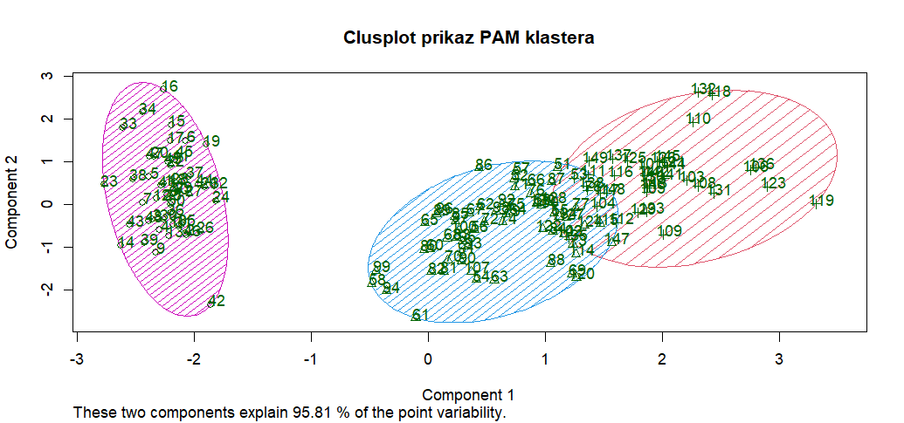

Analiza podataka i obrada informacija
Nositelj: izv. prof. dr. sc. Siniša Sovilj
Asistent: mag. inf. Alesandro Žužić
Ustanova: Sveučilište Jurja Dobrile u Puli, Fakultet informatike u Puli
 Fakultet informatike u Puli
Fakultet informatike u Puli
[3] Korelacija i regresija, vremenski nizovi, klasifikacija i grupiranje
Korelacija mjeri linearnu povezanost između varijabli. Regresija modelira odnose za predviđanje vrijednosti. Vremenski nizovi analiziraju podatke ovisne o vremenu. Klasifikacija dodjeljuje podatke unaprijed definiranim kategorijama, dok grupiranje (klasteriranje) automatski identificira prirodne grupe u podacima. U R-u se koriste funkcije poput cor(), lm(), forecast(), rpart() i kmeans(), a vizualizacija pomaže u interpretaciji rezultata.
Posljednje ažurirano: 21. svibnja 2025.
- Analiza podataka i obrada informacija
- [3] Korelacija i regresija, vremenski nizovi, klasifikacija i grupiranje
Korelacija
Korelacija kvantificira statističku povezanost između dvije numeričke varijable, pokazujući koliko se one zajedno mijenjaju. Povezanost znači da je vrijednost jedne varijable s nekom vjerojatnošću moguće predvidjeti na osnovi saznanja o vrijednosti druge varijable.
Promjena vrijednosti jedne varijable utječe na promjenu vrijednosti druge varijable. Varijabla koja svojom vrijednošću utječe na drugu varijablu naziva se neovisna varijabla. Varijabla na koju se utječe naziva se ovisna varijabla.
Mogući su slučajevi da dvije varijable istovremeno utječu jedna na drugu, pa su u tom slučaju obje varijable istovremeno i ovisne i neovisne.
U R-u korelacija se računa s pomoću sljedeće funkcije:
cor(x, y)
Međusoban odnos između dvije varijable, grafički možemo prikazati s pomoću dvodimenzionalnog grafa, tzv. scatter dijagram (dijagrama raspršenja).

Ovisno o međusobnom odnosu dvaju varijabli među kojima postoji korelacija, ona može biti linearna ili nelinearna.
- Kod linearne korelacije, točke su grupirane oko pravca.
- Kod nelinearne korelacije, točke su grupirane oko neke druge krivulje.

Četiri osnovna tipa korelacijskih odnosa:
-
Pozitivna korelacija (
+)- Karakteristike:
- Mala vrijednost varijable X ↔ mala vrijednost varijable Y
- Velika vrijednost varijable X ↔ velika vrijednost varijable Y
- Grafički prikaz: Točke se koncentriraju oko uzlazne linije
- Karakteristike:
-
Negativna korelacija (
-)- Karakteristike:
- Mala vrijednost varijable X ↔ velika vrijednost varijable Y
- Velika vrijednost varijable X ↔ mala vrijednost varijable Y
- Grafički prikaz: Točke se koncentriraju oko silazne linije
- Karakteristike:
-
Nemonotona korelacija (
ciklička)- Karakteristike:
- Odnos se mijenja po intervalima
- U nekim dijelovima može biti pozitivan, u drugima negativan
- Ako se smjer mijenja više puta → ciklička korelacija
- Grafički prikaz: Točke slijede valoviti obrazac (npr. sinusoida)
- Karakteristike:
-
Nul-korelacija (
0)- Karakteristike:
- Nema vidljive veze između varijabli
- Vrijednosti jedne varijable ne pružaju informaciju o vrijednostima druge
- Grafički prikaz: Točke potpuno nasumično raspršene
- Karakteristike:
| Tip korelacije | Smjer | Snaga | Primjer vizualizacije |
|---|---|---|---|
| Pozitivna | ↗ | Jaka do umjerena | Točke blisko uz uzlaznu liniju |
| Negativna | ↘ | Jaka do umjerena | Točke blisko uz silaznu liniju |
| Nemonotona | Promjenjiv | Varira | Valoviti/periodični obrazac |
| Nul-korelacija | - | 0 | Kaotično raspršene točke |

Koeficijenti korelacije
Koeficijenti korelacije mjere povezanost između varijabli na standardiziranoj skali neovisnoj o mjernim jedinicama. Dva najčešća koeficijenta su:
- Pearsonov (r) - mjeri linearnu povezanost (-1 do +1), optimalan za normalno distribuirane podatke
- Spearmanov (ρ) - mjeri monotonu povezanost kroz rangove, robusniji na nelinearnosti i outlier-e
Pearson je osjetljiv na linearne odnose, dok Spearman hvata širi spektar monotonih veza (uključujući nelinearne). Oba koeficijenta eliminiraju utjecaj mjernih jedinica, omogućavajući usporedbu različitih varijabli.
Pearsonov koeficijent korelacije
Pearsonov koeficijent (r) mjeri linearnu povezanost između dvije numeričke varijable s normalnom distribucijom. Vrijednost Pearsonovog koeficijenta korelacije kreće se od +1 (savršena pozitivna korelacija) do –1 (savršena negativna korelacija). Predznak koeficijenta nas upućuje na smjer korelacije – je li pozitivna ili negativna, ali nas ne upućuje na snagu korelacije. Pearsonov koeficijent korelacije bazira se na usporedbi stvarnog utjecaja promatranih varijabli jedne na drugu u odnosu na maksimalni mogući utjecaj dviju varijabli.
Vrijednosti:
- +1: savršena pozitivna korelacija
- -1: savršena negativna korelacija
- 0: nema linearne veze
Osjetljiv je na outlier-e te zahtijeva linearnost i normalnu distribuciju
cor() funkcija uvijek koristi Pearsonov koeficijent tako da se ne navodi kao argument:
cor(x, y)
Vrijednosti Pearsonovog koeficijenta korelacije:
| Vrijednost (r) | Jakost veze | Smjer veze |
|---|---|---|
| -1.0 | Funkcionalna veza | Negativan |
| -1.0 < r < -0.8 | Jaka veza | Negativan |
| -0.8 ≤ r < -0.5 | Umjerena veza | Negativan |
| -0.5 ≤ r < 0 | Slaba veza | Negativan |
| 0 | Nema linearne veze | - |
| 0 < r ≤ 0.5 | Slaba veza | Pozitivan |
| 0.5 < r ≤ 0.8 | Umjerena veza | Pozitivan |
| 0.8 < r < 1.0 | Jaka veza | Pozitivan |
| 1.0 | Funkcionalna veza | Pozitivan |
Spearmanov koeficijent korelacije
Spearmanov koeficijent (ρ) mjeri monotonu povezanost (linearne i nelinearne) kroz rangove vrijednosti. Koristi se za mjerenje povezanosti između varijabli u slučajevima kada nije moguće primijeniti Pearsonov koeficijent korelacije. Bazira se na tome da se izmjeri dosljednost povezanosti između poredanih varijabli, a oblik povezanosti (npr. linearni oblik koji je preduvjet za korištenje Pearsonovog koeficijenta) nije bitan.
Robusniji na odstupanja od normalnosti te detektira širi spektar veza
Da bi koristili Spearmanov koeficijent u cor() funkciji trebamo ga navesti kao metodu:
cor(x, y, method = "spearman")

Matrica korelacije
Matrica korelacije je tabularni prikaz koeficijenata korelacije između svih parova varijabli u skupu podataka. Omogućuje:
- Simultani pregled međusobnih odnosa više varijabli
- Identifikaciju najjačih povezanosti
- Preliminarnu analizu prije složenijih statističkih modela
Dijagonala: Uvijek sadrži vrijednosti 1 (savršena korelacija varijable same sa sobom)
Simetričnost: cor(X,Y) = cor(Y,X)
Izrada korelacijske matrice u R-u s pomoću corrplot() ili corrgram() funkcija:
#install.packages("corrplot")
#install.packages("corrgram)
library(corrplot)
library(corrgram)
par(mfrow = c(2, 3))
cor_matrix <- cor(quakes)
corrplot(cor_matrix) # method = "circle" - ako nije postavljeno
corrplot(cor_matrix, method = "color")
corrplot(cor_matrix, method = "number")
corrplot(cor_matrix, method = "square")
corrplot(cor_matrix, method = "ellipse")
corrplot(cor_matrix, method = "pie")

Izrada korelacijske matrice u R-u s pomoću pairs() funkcije:
pairs(quakes)

Outlieri u korelacijskoj analizi
Outlieri su ekstremne vrijednosti koje značajno odstupaju od većine podataka i mogu dramatično utjecati na rezultate korelacijske analize. Budući da Pearsonov koeficijent koristi metode najmanjih kvadrata, samo nekoliko ekstremnih vrijednosti može potpuno iskriviti pravi odnos između varijabli. Vizualna detekcija s pomoću boxplot-a jedan je način za vizualnu identifikaciju outliera.
U praksi se koriste kvantitativne metode za identifikaciju outliera, poput:
- Uklanjanja vrijednosti izvan
±2standardne devijacije - IQR metode (vrijednosti izvan
1.5×IQRod kvartila)
Ključni izazov je razlikovati prave outliere od rijetkih ali autentičnih vrijednosti. U velikim uzorcima s malim brojem outliera, njihovo uklanjanje je opravdano. Međutim, u malim uzorcima ili kada outlieri predstavljaju važne biološke/prirodne pojave, njihovo uklanjanje može dovesti do gubitka ključnih informacija.

Kovarijanca
Kovarijanca mjeri zajedničku varijabilnost dviju numeričkih varijabli, pokazujući kako se jedna mijenja u odnosu na drugu. Za razliku od korelacije koja je standardizirana, kovarijanca ovisi o mjernim jedinicama varijabli što otežava izravnu usporedbu između različitih studija. Računa se kao prosječni umnožak odstupanja svake varijable od svoje srednje vrijednosti.
Pozitivna vrijednost ukazuje da se veće vrijednosti jedne varijable obično javljaju uz veće vrijednosti druge, dok negativna pokazuje suprotan odnos. Nulta vrijednost sugerira odsutnost linearne povezanosti.
- Pozitivna kovarijanca: Veće vrijednosti X tendiraju uz veće vrijednosti Y
- Negativna kovarijanca: Veće vrijednosti X tendiraju uz manje vrijednosti Y
- Nula: Nema linearne povezanosti
U R-u kovarijanca se računa s pomoću sljedeće funkcije:
cov(x, y)
Korelacija je standardizirana verzija kovarijance:
$$
\rho = \frac{\text{cov}(X,Y)}{\sigma_X \sigma_Y}
$$
Dok kovarijanca može biti bilo koji realan broj, korelacija je uvijek između -1 i 1.
Multikolinearnost
Multikolinearnost nastaje kada su dva ili više prediktora u regresijskom modelu visoko međusobno korelirana, što otežava pouzdano procjenjivanje njihovih pojedinačnih utjecaja.
Zašto je problematična:
- Koeficijenti postaju nestabilni i osjetljivi na male promjene u podacima
- Standardne pogreške rastu → p-vrijednosti mogu postati nenamjerno visoke
- Teže je interpretirati doprinos pojedinih varijabli
Kako otkriti:
- Korelacijska matrica: Pogledati visoke korelacije između prediktora (npr. > 0.8)
- VIF (Variance Inflation Factor): Ako je VIF > 5 (ili 10), postoji jaka multikolinearnost
library(car)
vif(model)
Rješenja:
- Ukloniti jedan od koreliranih prediktora
- Kombinirati varijable (npr. PCA)
- Korištenje regularizacije (npr. Ridge, Lasso regresija)
sqrt(vif(model))>2
# Ako je sve false nema problema multikolinearnosti
Regresijska analiza
Regresijska analiza omogućuje kvantificiranje veze između promatranih pojava kroz matematički model.
- Objašnjenje odnosa: Utvrđivanje kako nezavisne varijable utječu na zavisnu varijablu
- Predviđanje vrijednosti: Procjena budućih vrijednosti zavisne varijable na temelju poznatih vrijednosti nezavisnih varijabli
Tipovi regresije:
| Tip | Formula | Primjena |
|---|---|---|
| Linearna | $$Y = β_0 + β_1X + ε$$ | Kontinuirani odnosi |
| Logistička | $$ln(\frac{p}{1-p}) = βX$$ | Binarni ishodi |
| Polinomska | $$Y = β_0 + β_1X + β_2X^2$$ | Nelinearni trendovi |
Linearna regresija
Primjer:
# Linearna regresija
model <- lm(mpg ~ wt + hp, data = mtcars)
summary(model)
Output:
Call:
lm(formula = mpg ~ wt + hp, data = mtcars)
Residuals:
Min 1Q Median 3Q Max
-3.941 -1.600 -0.182 1.050 5.854
Coefficients:
Estimate Std. Error t value Pr(>|t|)
(Intercept) 37.22727 1.59879 23.285 < 2e-16 ***
wt -3.87783 0.63273 -6.129 1.12e-06 ***
hp -0.03177 0.00903 -3.519 0.00145 **
---
Signif. codes: 0 ‘***’ 0.001 ‘**’ 0.01 ‘*’ 0.05 ‘.’ 0.1 ‘ ’ 1
Residual standard error: 2.593 on 29 degrees of freedom
Multiple R-squared: 0.8268, Adjusted R-squared: 0.8148
F-statistic: 69.21 on 2 and 29 DF, p-value: 9.109e-12
Ova naredba u R-u:
lm(formula = mpg ~ wt + hp, data = mtcars)
pokreće linearnu regresiju gdje je cilj predvidjeti potrošnju goriva u miljama po galonu (mpg) na temelju dvaju prediktora:
- wt: težina automobila (u tisućama funti),
- hp: konjske snage automobila.
Rezultat koji dobivamo sastoji se od nekoliko dijelova:
1. Reziduali (Residuals):
Min 1Q Median 3Q Max
-3.941 -1.600 -0.182 1.050 5.854
Reziduali su razlike između stvarnih vrijednosti (mpg) i onih predviđenih modelom:
- Min: Najveća negativna pogreška
- 1Q: Donji kvartil (25% podataka ima manji rezidual)
- Median: Srednja vrijednost reziduala (idealno blizu 0)
- 3Q: Gornji kvartil (25% podataka ima veći rezidual)
- Max: Najveća pozitivna pogreška
2. Koeficijenti regresije (Coefficients):
| Predictor | Estimate | Std. Error | t value | Pr(|>t|) | Signif. code |
|---|---|---|---|---|---|
| Intercept | 37.227 | 1.599 | 23.285 | < 2e-16 | *** |
| wt | -3.878 | 0.633 | -6.129 | 1.12e-06 | *** |
| hp | -0.03177 | 0.00903 | -3.519 | 0.00145 | ** |
- Intercept (presjek): Kada su težina i snaga 0, očekivana vrijednost
mpgje 37.23 (tehnički, nije realna situacija, ali služi kao referentna točka). - wt: Svako povećanje težine za 1 (tj. 1000 funti) smanjuje
mpgza 3.88 jedinica, pod uvjetom da su ostali prediktori konstantni. - hp: Svako povećanje snage za 1 konjsku snagu smanjuje
mpgza oko 0.032 jedinice.
Std. Error (standardna pogreška): Predstavlja procjenu nesigurnosti oko vrijednosti koeficijenta. Manja vrijednost znači veću pouzdanost.
- standardna pogreška za
wtiznosi 0.633, što ukazuje na relativno stabilnu i pouzdanu procjenu njegovog utjecaja nampg
t value (t-vrijednost): Pokazuje koliko je procijenjeni koeficijent udaljen od nule u jedinicama svoje standardne pogreške. Što je t-vrijednost veća (pozitivno ili negativno), veća je vjerojatnost da koeficijent nije slučajan, već ima stvarni utjecaj na zavisnu varijablu (mpg).
- t-vrijednost
-6.129zawtznači da je koeficijent vrlo značajan
Pr(>|t|) prikazuje p-vrijednosti – sve su značajno manje od 0.05 → svi koeficijenti su statistički značajni.
Signif. codes: 0 ‘***’ 0.001 ‘**’ 0.01 ‘*’ 0.05 ‘.’ 0.1 ‘ ’ 1
Oznake govore koliko je prediktor statistički značajan:
***→ vrlo značajan (p < 0.001)**→ značajan (p < 0.01)*→ umjereno značajan (p < 0.05).→ slabo značajan (p < 0.1)
3. Ostale statističke vrijednosti modela:
Residual standard error: 2.593 on 29 degrees of freedom
Multiple R-squared: 0.8268
Adjusted R-squared: 0.8148
F-statistic: 69.21 on 2 and 29 DF, p-value: 9.109e-12
- Residual standard error: Prosječna udaljenost stvarnih vrijednosti
mpgod vrijednosti predviđenih modelom. Niža vrijednost znači da su predikcije bliže stvarnim podacima (ovdje: 2.593). - Multiple R-squared: Postotak varijance u
mpgkoji model objašnjava s pomoću prediktorawtihp. Vrijednost 0.8268 znači da model objašnjava 82.68% ukupne varijacije. - Adjusted R-squared: Kao R-squared, ali uzima u obzir broj prediktora. Koristi se kako bi se izbjegla umjetna inflacija R-squared vrijednosti kod dodavanja irelevantnih varijabli. Ovdje: 81.48%.
- F-statistic: Testira cijeli model – provjerava je li barem jedan prediktor značajan. Visoka vrijednost (69.21) i vrlo mala p-vrijednost (9.109e-12) ukazuju da je model statistički značajno bolji od modela bez prediktora.
Logistička regresija
Logistička regresija se koristi za predviđanje binarnih ishoda, tj. kada zavisna varijabla ima dvije kategorije (npr. da/ne, uspješno/neuspješno). U R-u, za izvođenje logističke regresije koristi se funkcija glm(), a rezultati se analiziraju kroz koeficijente, standardne pogreške, p-vrijednosti i druge metrike.
Logistička regresija se koristi za predviđanje binarne varijable — u ovom slučaju: ima li osoba prihod veći od 50k USD ili ne. Zavisna varijabla je income, s vrijednostima <=50K i >50K.
Primjer:
adult <- read.csv("adult.data", header = FALSE, strip.white = TRUE)
colnames(adult) <- c("age", "workclass", "fnlwgt", "education", "education.num",
"marital.status", "occupation", "relationship", "race", "sex",
"capital.gain", "capital.loss", "hours.per.week", "native.country", "income")
adult <- na.omit(adult)
adult$income_bin <- ifelse(adult$income == ">50K", 1, 0)
model <- glm(income_bin ~ age + education.num, data = adult, family = binomial)
summary(model)
Output:
Call:
glm(formula = income_bin ~ age + education.num, family = binomial,
data = adult)
Coefficients:
Estimate Std. Error z value Pr(>|z|)
(Intercept) -6.748100 0.088629 -76.14 <2e-16 ***
age 0.043483 0.001091 39.87 <2e-16 ***
education.num 0.362109 0.006366 56.89 <2e-16 ***
---
Signif. codes: 0 ‘***’ 0.001 ‘**’ 0.01 ‘*’ 0.05 ‘.’ 0.1 ‘ ’ 1
(Dispersion parameter for binomial family taken to be 1)
Null deviance: 35948 on 32560 degrees of freedom
Residual deviance: 30231 on 32558 degrees of freedom
AIC: 30237
Number of Fisher Scoring iterations: 5
| Predictor | Estimate | Std. Error | z value | Pr(|>z|) | Signif. code |
|---|---|---|---|---|---|
| Intercept | -6.7481 | 0.0886 | -76.14 | < 2e-16 | *** |
| age | 0.0435 | 0.0011 | 39.87 | < 2e-16 | *** |
| education.num | 0.3621 | 0.0064 | 56.89 | < 2e-16 | *** |
-
(Intercept): Logaritamski omjer vjerojatnosti da osoba zarađuje >50k USD kada su
ageieducation.numjednaki 0. Iako ta situacija nije realna (osoba stara 0 godina s obrazovanjem 0), presjek služi kao referentna točka u modelu. -
age: Koeficijent
0.0435znači da svaka dodatna godina starosti povećava log-odds za zaradu veću od 50k za 0.0435. Budući da je pozitivan, stariji ljudi imaju veću vjerojatnost da imaju veće prihode — uz pretpostavku da jeeducation.numkonstantan. -
education.num: Koeficijent
0.3621znači da svaka dodatna razina obrazovanja (npr. prelazak s 10 na 11 godina formalnog obrazovanja) povećava log-odds za visoku zaradu za 0.3621. Dakle, veće obrazovanje snažno utječe na vjerojatnost veće plaće.
Izračunavanje vjerojatnosti
Za predviđanje vjerojatnosti određenog ishoda (npr. outcome = 1), koristimo funkciju predict():
prob <- predict(model, type = "response")
Ova funkcija vraća vjerojatnosti (između 0 i 1) za svaki primjerak u datasetu. Ako želimo pretvoriti te vjerojatnosti u kategorije (npr. 1 ako je vjerojatnost veća od 0.5, inače 0), možemo to napraviti ovako:
pred_class <- ifelse(prob > 0.5, 1, 0)
Za procjenu kvalitete modela možemo koristiti nekoliko metrika, uključujući točnost (accuracy), preciznost (precision), osjetljivost (recall) i F1-score. Također, često se koristi confusion matrix za vizualizaciju performansi modela:
table(Predicted = pred_class, Actual = adult$income_bin)
Dobivena matrica:
Actual 0 (<=50K) |
Actual 1 (>50K) |
|
|---|---|---|
| Predicted 0 | 23,286 (TN) | 5,656 (FN) |
| Predicted 1 | 1,434 (FP) | 2,185 (TP) |
-
TN (True Negative) = 23,286 → Model je točno predvidio da osoba nema visoki prihod (
<=50K) -
TP (True Positive) = 2,185 → Model je točno predvidio da osoba ima visoki prihod (
>50K) -
FN (False Negative) = 5,656 → Model je krivo predvidio da osoba nema visoki prihod, iako zapravo ima (
>50K) -
FP (False Positive) = 1,434 → Model je krivo predvidio da osoba ima visoki prihod, iako zapravo nema (
<=50K)
Izračun metrika:
# Vrijednosti iz confusion matrice
TP <- 2185
TN <- 23286
FP <- 1434
FN <- 5656
# Ukupno primjera
total <- TP + TN + FP + FN # = 32361
# Izračun metrika
accuracy <- (TP + TN) / total # Točnost
precision <- TP / (TP + FP) # Preciznost
recall <- TP / (TP + FN) # Osjetljivost (Recall)
specificity <- TN / (TN + FP) # Specifičnost
f1_score <- 2 * (precision * recall) / (precision + recall) # F1-score
Rezultati:
| Metrika | Vrijednost | Objašnjenje |
|---|---|---|
| Točnost | 0.7822 | 78.22% ispravnih predikcija |
| Preciznost | 0.6037 | Od svih za koje je model rekao >50K, točno je 60.37% |
| Osjetljivost | 0.2786 | Od svih koji stvarno imaju >50K, uhvaćeno je 27.86% |
| Specifičnost | 0.9419 | Od svih koji stvarno imaju <=50K, točno klasificirano 94.19% |
| F1-score | 0.3813 | Harmonična sredina preciznosti i osjetljivosti (za >50K) |
Vremenski nizovi
Vremenski nizovi predstavljaju nizove podataka prikupljenih u redovitim vremenskim intervalima. Analiza vremenskih nizova omogućava prepoznavanje obrazaca, trendova i sezonalnosti te predviđanje budućih vrijednosti.
Vremenski niz je skup opažanja indeksiranih vremenskih trenutaka, obično ekvidistantnim (jednako razmaknutim).
Dvije glavne karakteristike vremenskih nizova su vremenski period i frekvencija. Ove karakteristike pružaju osnovne informacije o strukturi i prirodi podataka te omogućavajući da bolje razumijemo dinamiku promjena koje se odvijaju kroz vrijeme.
- Vremenski period - nema ograničenja u pogledu ukupnog trajanja vremenskog niza. To može biti minuta, dan, mjesec ili čak stoljeće. Sve što je potrebno su početna i završna točka.
- npr. ako su podaci prikupljeni jednom dnevno od 1. siječnja 2000. do 31. prosinca 2009., razmak od jednog dana predstavlja vremenski trenutak, dok je skup vremenskih trenutaka cijelo desetljeće
- Frekvencija - označava koliko često se bilježe vrijednosti skupa podataka. Da bi analiza vremenskog niza bila smislena, svi vremenski trenutci moraju biti jednaki i jasno definirani. To rezultira ekvidistantnim rasporedom vremenskih trenutaka, što pokazuje pravilnost u bilježenju podataka.
- npr. frekvencija se može kretati od nekoliko milisekundi do nekoliko desetljeća, ali najčešće se pojavljuju dnevni, mjesečni, kvartalni i godišnji podaci
Ključne komponente:
- Trend - dugoročni smjer promjena (rast, pad, stabilnost)
- Sezonalnost - pravilne fluktuacije povezane s periodima (dnevno, mjesečno, godišnje)
- Cikličke varijacije - dugotrajne fluktuacije bez fiksnog perioda
- Nasumične varijacije - nepredvidivi šum u podacima
Paketi za rad s vremenskim nizovima:
# install.packages(c("ggplot2", "forecast", "tseries"))
library(ggplot2) # Za naprednu vizualizaciju grafova
library(forecast) # Alati za analizu i predikciju vremenskih nizova (ARIMA, ETS, STL, itd.)
library("tseries") # Statistički testovi i alati za vremenske nizove (ADF test, KPSS test i dr.)
U R-u se vremenski nizovi prikazuju s pomoću funkcije ts() (time series):
podaci <- c(23,45,67,34,56,78,89,45,67,89,43,56,
34,67,89,54,76,88,91,52,71,85,49,63)
vremenski_niz <- ts(podaci, start = c(2020, 1), frequency = 12)
# čišćenje od nedostajućih vrijednosti i outliera
vremenski_niz <- tsclean(vremenski_niz)
Gdje:
start- početni vremenski trenutak (godina, period)frequency- broj opažanja po vremenskoj jedinici (365 za dnevne podatke, 12 za mjesečne, 4 za kvartalne, 1 za godišnje)
Vizualizacija s pomoću plot() funkcije:
data("AirPassengers") # Monthly totals of international airline passengers, 1949 to 1960.
vremenski_niz <- AirPassengers

plot(vremenski_niz, main = "Vremenski niz sa trend linijom")
abline(lm(vremenski_niz ~ time(vremenski_niz)), col = "red")

Vizualizacija s pomoću ma() (moving average) funkcije, za glađi prikaz podataka:
par(mfrow=c(2,2))
vremenski_niz_ma3 <- ma(vremenski_niz, order = 3)
vremenski_niz_ma5 <- ma(vremenski_niz, order = 9)
vremenski_niz_ma7 <- ma(vremenski_niz, order = 27)
plot(vremenski_niz, main = "Bez pomičnog prosjeka")
plot(vremenski_niz_ma3, main = "Pomični prosjek (red 3)")
plot(vremenski_niz_ma5, main = "Pomični prosjek (red 9)")
plot(vremenski_niz_ma7, main = "Pomični prosjek (red 27)")
Analiza vremenskih nizova
Analiza vremenskih nizova je ključna u upravljanju, posebno za predviđanje ishoda kao što su prodaja, troškovi ili uspjeh projekata. Koristi povijesne podatke za predviđanje budućih rezultata i procjenu utjecaja upravljačkih odluka. Podaci se bilježe u redovitim vremenskim intervalima, što omogućuje praćenje promjena varijabli tijekom vremena. Vrijeme postaje ključna varijabla koja pokazuje trendove, sezonske utjecaje i obrasce ponašanja. Za pouzdanu analizu potrebno je dovoljno podataka kako bi se izbjegle pogreške uzrokovane iznimnim vrijednostima. Što je skup podataka veći, to su rezultati pouzdaniji. Analiza vremenskih nizova pomaže u donošenju informiranih odluka na temelju jasnih vremenskih ovisnosti.
Dekompozicija vremenskog niza
Dekompozicija vremenskog niza je ključna tehnika u analizi vremenskih serija koja omogućuje razdvajanje kompleksnog niza podataka na njegove osnovne komponente. Ova metoda pruža jasniji uvid u strukturu podataka i olakšava interpretaciju.
-
Originalni podaci (observed): predstavljaju neobrađene podatke koji su izravno prikupljeni iz izvora. Ovi podaci sadrže sve informacije u svom izvornom obliku, bez ikakvih modifikacija ili transformacija.
-
Trend komponenta (trend): pokazuje osnovni pravac kretanja podataka. Može biti uzlazan, silazan ili stabilan. Na primjer, ako analiziramo prodaju nekog proizvoda, trend će vjerojatno pokazivati postupni rast kroz godine. Ova komponenta nam pomaže uočiti osnovni smjer razvoja bez sporednih utjecaja.
-
Sezonska komponenta (seasonal): otkriva ponavljajuće obrasce koji se javljaju u redovitim intervalima. To mogu biti dnevne, tjedne, mjesečne ili godišnje varijacije. Tipičan primjer je povećana prodaja božićnih ukrasa u prosincu ili veća potrošnja električne energije tijekom zimskih mjeseci. Ova komponenta je posebno važna za planiranje u poslovnim aktivnostima.
-
Slučajna komponenta (random): sadrži sve one promjene koje ne možemo objasniti trendom niti sezonalnosti. To su nepredvidive fluktuacije koje mogu biti posljedica iznenadnih događaja, mjernih pogrešaka ili drugih neplaniranih čimbenika. Iako često smetaju analizi, njihovo praćenje može biti korisno za otkrivanje neuobičajenih pojava.
Primjer:
dekompozicija <- decompose(AirPassengers)
plot(dekompozicija)
STL metoda
STL (Seasonal Decomposition of Time Series by Loess) je naprednija metoda dekompozicije koja koristi lokalnu regresiju (LOESS) za razdvajanje komponenti.
# Primjer STL dekompozicije
stl_dekomp <- stl(AirPassengers, s.window = "periodic")
# Vizualizacija
plot(stl_dekomp, main = "STL dekompozicija AirPassengers dataseta")
Aditivna i multiplikativna dekompozicija vremenskog niza
1. Aditivna dekompozicija
Koristi se kada amplitude sezonskih fluktuacija ostaju konstantne kroz vrijeme.
Model:
Y(t) = Trend(t) + Sezonska(t) + Slučajna(t)
Karakteristike:
- Sezonske varijacije su konstantne magnitude
- Trend linearni ili polinomijalni
- Pogodna za nizove s konstantnom varijancom
Primjer u R:
decomp_add <- decompose(AirPassengers, type = "additive")
plot(decomp_add)
stl_add <- stl(AirPassengers, s.window = "periodic")
plot(stl_add, main = "STL Aditivna dekompozicija")


2. Multiplikativna dekompozicija
Koristi se kada sezonske fluktuacije rastu/smanjuju s trendom.
Model:
Y(t) = Trend(t) * Sezonska(t) * Slučajna(t)
Karakteristike:
- Sezonske varijacije proporcionalne trendu
- Često kod ekonomskih nizova s eksponencijalnim rastom
- Zahtijeva log transformaciju ako postoje negativne vrijednosti
Primjer u R:
decomp_mult <- decompose(AirPassengers, type = "multiplicative")
plot(decomp_mult)
log_ap <- log(AirPassengers)
stl_mult <- stl(log_ap, s.window = "periodic")
plot(stl_mult, main = "STL Multiplikativna dekompozicija")


Stacionarnosti vremenskog niza
Stacionarnost je ključni koncept u analizi vremenskih nizova. Vremenski niz se smatra stacionarnim ako njegove statističke karakteristike, kao što su srednja vrijednost, varijanca i kovarijanca, ne ovise o vremenu. Drugim riječima, stacionarni niz ne pokazuje dugoročne trendove i sezonske promjene, te je moguće predvidjeti njegove buduće vrijednosti na temelju prošlih podataka. Ako niz nije stacionaran, može biti potrebno primijeniti transformacije poput diferenciranja kako bi se postigla stacionarnost.
Vrste stacionarnosti:
- Striktna stacionarnost:
- Niz je striktno stacionaran ako su sve njegove distribucije u svim vremenskim točkama identične. Ovo uključuje ne samo srednju vrijednost, varijancu i kovarijancu, nego i sve više statističke momente.
- Slaba stacionarnost:
- Niz je slabo stacionaran ako su samo prva dva statistička momenta (srednja vrijednost i varijanca) konstantni kroz vrijeme, a kovarijanca između vrijednosti u različitim vremenskim točkama ovisi samo o vremenskom razmaku, a ne o apsolutnim vremenskim točkama.
Provjera stacionarnosti
Jedan od najpoznatijih testova za provjeru stacionarnosti vremenskog niza je Augmented Dickey-Fuller (ADF) test, koji testira hipotezu da niz ima jedinčasti korijen, odnosno da nije stacionaran. Ako p-vrijednost testa bude manja od 0.05, možemo odbaciti hipotezu da niz nije stacionaran i zaključiti da je niz stacionaran.
Primjer:
library(tseries)
data("AirPassengers")
vremenski_niz <- AirPassengers
adf_test <- adf.test(vremenski_niz)
adf_test
Output:
Warning message:
In adf.test(vremenski_niz) : p-value smaller than printed p-value
> adf_test
Augmented Dickey-Fuller Test
data: vremenski_niz
Dickey-Fuller = -7.3186, Lag order = 5, p-value = 0.01
alternative hypothesis: stationary
p-vrijednost: 0.01
Ovaj rezultat znači da je p-vrijednost manja od 0.05, što sugerira da možemo odbaciti nultu hipotezu da vremenski niz nije stacionaran. Dakle, vremenski niz je stacionaran.
-
Dickey-Fuller: Vrijednost test statistike je -7.3186. Ova statistika mjeri koliko su podaci u skladu s hipotezom o postojanju jedinčastog korijena (ne-stacionarnosti). Manje negativne vrijednosti obično ukazuju na veću vjerojatnost da niz nije stacionaran, dok negativne vrijednosti poput ove sugeriraju da je niz vjerojatno stacionaran.
-
Lag order = 5: Test je korišten s 5 vremenskih kašnjenja (lags), što znači da su uzeti u obzir prethodni podaci na 5 vremenskih razmaka u analizi.
-
Alternative hypothesis: Hipoteza je da je niz stacionaran, što je u skladu s rezultatima p-vrijednosti.
Zaključak: Budući da je p-vrijednost manja od 0.05, možemo zaključiti da je vremenski niz stacionaran, odnosno da ne pokazuje dugoročne trendove ili sezonske promjene koje bi ometale daljnju analizu i modeliranje.
Ako je p-vrijednost manja od 0.05, možemo zaključiti da je niz stacionaran.
Prilagodba niza za stacionarnost
Ako vremenski niz nije stacionaran, možemo primijeniti nekoliko metoda za njegovu prilagodbu:
-
Diferenciranje:
- Diferenciranje je najčešće korištena tehnika za postizanje stacionarnosti. To znači da od svakog podatka oduzimamo prethodnu vrijednost, čime se uklanjaju trendovi i sezonske promjene. U R-u to možemo postići s funkcijom
diff().
Funkcija
diff()koristi se za izračun razlike između uzastopnih vrijednosti vremenskog niza, što pomaže u uklanjanju trenda i postizanju stacionarnosti.Primjer:
diferencirani_niz <- diff(vremenski_niz, 1) adf.test(diferencirani_niz)Funkcija
ndiffs()automatski određuje broj diferencijacija potrebnih za postizanje stacionarnosti vremenskog niza.Primjer:
num_diffs <- ndiffs(ap) num_diffs # Vraća broj potrebnih diferencijacija za stacionarnost, 1 u ovom slučaju - Diferenciranje je najčešće korištena tehnika za postizanje stacionarnosti. To znači da od svakog podatka oduzimamo prethodnu vrijednost, čime se uklanjaju trendovi i sezonske promjene. U R-u to možemo postići s funkcijom
-
Logaritamska transformacija:
- Ako niz pokazuje eksponencijalni rast, primjena logaritamske transformacije može pomoći u stabilizaciji varijance i postizanju stacionarnosti.
# Logaritamska transformacija log_niz <- log(vremenski_niz) adf.test(log_niz)
ACF i PACF
ACF (Autocorrelation Function) i PACF (Partial Autocorrelation Function) su dva ključna alata za analizu vremenskih nizova. Ove funkcije pomažu u razumijevanju odnosa između različitih vremenskih točaka unutar niza i korištene su u identifikaciji odgovarajućih modela za vremenske nizove, poput ARIMA modela.
ACF (Autocorrelation Function)
ACF mjeri ukupnu korelaciju između trenutnih i prošlih vrijednosti vremenskog niza. To pokazuje kako su prošle vrijednosti povezane s trenutnim stanjem. Na primjer, ako se promjena u prošlim vrijednostima negativno ili pozitivno odražava na trenutne vrijednosti, ACF će to pokazati.
Primjer:
data("AirPassengers")
ap <- AirPassengers
acf(ap, main = "ACF - AirPassengers")

- Ako ACF prikazuje visoke korelacije u početnim vremenskim pomacima, to može značiti da je niz značajno autocorrelated, tj. da postoje značajni trendovi ili sezonske komponente.
PACF (Partial Autocorrelation Function)
PACF mjeri korelaciju između trenutne i prošle vrijednosti vremenskog niza, uzimajući u obzir sve intermedijarne vremenske točke. To je korisno za utvrđivanje koji broj prethodnih vrijednosti je potrebno uključiti u model. PACF je koristan kada želimo razumjeti utjecaj točno određene vremenske točke bez "smetnji" drugih vremenskih točaka.
Primjer:
pacf(ap, main = "PACF - AirPassengers")

- Ako PACF pokazuje značajnu korelaciju samo na početnim pomacima, to može ukazivati na to da se model treba fokusirati samo na te početne vrijednosti, dok kasniji pomaci nemaju značajan utjecaj.
Korištenje ACF i PACF u modeliranju
- ACF je koristan za odabir redova MA (Moving Average) dijela ARIMA modela, dok PACF pomaže u odabiru redova AR (AutoRegressive) dijela.
- Ako ACF pokazuje značajnu korelaciju na početnim pomacima, ali brzo opada, to može sugerirati da je MA model prikladan.
- Ako PACF pokazuje značajnu korelaciju na početnim pomacima, a zatim opada, to može sugerirati da je AR model prikladan.
Ovisno o vizualizaciji ACF-a i PACF-a, možemo odlučiti koje parametre AR i MA odabrati za ARIMA model.
ARIMA model
ARIMA (AutoRegressive Integrated Moving Average) je model koji kombinira autoregresiju, diferenciranje i pomični prosjek kako bi predvidio buduće vrijednosti vremenskog niza.
Primjer:
data("AirPassengers")
ap <- AirPassengers
ap_arima <- auto.arima(ap)
summary(ap_arima)
Output:
Series: ap
ARIMA(2,1,1)(0,1,0)[12]
Coefficients:
ar1 ar2 ma1
0.5960 0.2143 -0.9819
s.e. 0.0888 0.0880 0.0292
sigma^2 = 132.3: log likelihood = -504.92
AIC=1017.85 AICc=1018.17 BIC=1029.35
Training set error measures:
ME RMSE MAE MPE MAPE MASE ACF1
Training set 1.3423 10.84619 7.86754 0.420698 2.800458 0.245628 -0.00124847
ARIMA(2,1,1)(0,1,0)[12]: Ovaj model koristi dva autoregresivna parametra (AR(2)), jedan pomični prosjek (MA(1)), s prvim diferenciranjem i sezonskim diferenciranjem na 12 mjeseci. Model je optimiziran za predviđanje vremenskih nizova sa sezonskim obrazcima.
AR1: Koeficijent 0.5960 znači da vrijednost vremenskog niza u trenutnom mjesecu ima značajnu pozitivnu korelaciju sa stanjem prije mjesec dana. Za svaki porast prethodne vrijednosti, trenutna vrijednost će se povećati za 0.5960.
AR2: Koeficijent 0.2143 pokazuje umjerenu pozitivnu korelaciju između trenutne vrijednosti i vrijednosti dva mjeseca prije. Za svaku promjenu u vrijednosti prije dva mjeseca, trenutna vrijednost se mijenja za 0.2143.
MA1: Koeficijent -0.9819 označava da postoji snažna negativna korelacija između trenutne vrijednosti i pogreške koja je nastala prije mjesec dana. To znači da velike pogreške iz prošlih razdoblja snažno utječu na trenutnu vrijednost, ali u suprotnom smjeru.
AIC (Akaike Information Criterion): Vrijednost 1017.85 pokazuje kvalitetu modela, pri čemu niže vrijednosti AIC označavaju bolji model. AIC je koristan za usporedbu različitih modela.
BIC (Bayesian Information Criterion): BIC je sličan AIC-u, ali uključuje i kaznu za broj parametara u modelu. Vrijednost 1029.35 pomaže u odabiru modela s nižim rizikom od pretreniranja.
-
Training set error measures:
- ME (Mean Error):
1.3423, što znači da je prosječna pogreška modela u predviđanju 1.34 - RMSE (Root Mean Squared Error):
10.84619ukazuje na veličinu pogreške u modelu - MAE (Mean Absolute Error):
7.86754označava prosječnu apsolutnu pogrešku predviđanja - MPE (Mean Percentage Error):
0.420698označava postotnu pogrešku modela - MAPE (Mean Absolute Percentage Error):
2.800458pokazuje postotak pogreške u modelu - MASE (Mean Absolute Scaled Error):
0.245628ukazuje na skaliranu pogrešku u modelu u odnosu na osnovni model - ACF1:
-0.00124847označava nisku korelaciju između pogrešaka modela i prethodnih pogrešaka, što sugerira da model ima dobar fit
- ME (Mean Error):
ARIMA predikcija putnika:
ap_forecast_arima <- forecast(ap_arima, h = 36)
autoplot(ap_forecast_arima) +
ggtitle("ARIMA predikcija broja putnika") +
xlab("Godina") + ylab("Broj putnika")

Klasifikacija
Klasifikacija je nadzirana tehnika strojnog učenja koja se koristi za predviđanje kategoričkih vrijednosti. Cilj je dodijeliti ulazne podatke unaprijed definiranim klasama na temelju značajki (features). U R-u se klasifikacija može provoditi korištenjem različitih algoritama, ovisno o prirodi problema i podataka.
- Klasa: Kategorija ili skupina u koju se podatak svrstava (npr. "bolest" / "nema bolesti")
- Značajke (features): Varijable koje se koriste za predviđanje klase
- Model: Algoritam koji uči vezu između značajki i ciljne varijable
Tipovi klasifikacijskih problema:
-
Binarna klasifikacija:
- Samo dvije moguće klase (npr. spam/ne-spam)
-
Multiklasna klasifikacija:
- Više od dvije klase (npr. prepoznavanje znamenki 0-9)
-
Multilabelna klasifikacija:
- Jedan primjer može pripadati više klasama istovremeno
Algoritmi klasifikacije:
| Algoritam | Paket u R-u | Opis |
|---|---|---|
| Stabla odluke | rpart() |
Hijerarhijska struktura za donošenje odluka koja dijeli podatke prema značajkama. |
| Slučajna šuma | randomForest() |
Ansambl metoda koja koristi više stabala odluke za poboljšanje točnosti i robusnosti. |
| Naivni Bayes | e1071 |
Probabilistički klasifikator temeljen na Bayesovom teoremu i pretpostavci nezavisnosti značajki. |
| K-najbližih susjeda | class::knn() |
Metoda koja klasificira primjer prema većinskoj klasi njegovih najbližih susjeda. |
Stablo odluke
Stablo odluke je model za prediktivnu analizu koji koristi strukturu nalik stablu za donošenje odluka i predviđanje ishoda. Sastoji se od:
- Čvorova odluke (unutarnji čvorovi) koji predstavljaju testiranje neke značajke (npr. je li visina > 170 cm),
- Grana koje vode do sljedećih čvorova ovisno o ishodu testa
- Listova (krajnjih čvorova) koji predstavljaju konačne odluke ili predikcije (npr. klasa „da“ ili „ne“).
Prednosti su što je model lako razumljiv i vizualno jasan, dok je glavni nedostatak osjetljivost na pretreniravanje, posebno kada je stablo duboko i složeno.
U R-u se može izraditi pomoću funkcije rpart() iz paketa rpart, a vizualizirati s rpart.plot.
Primjer: Stablo odluke za iris dataset
#install.packages("rpart")
#install.packages("rpart.plot")
library(rpart)
library(rpart.plot)
# Podjela podataka na trening i test skup
set.seed(123)
indeksi <- sample(1:nrow(iris), 0.7*nrow(iris))
train <- iris[indeksi,]
test <- iris[-indeksi,]
# Izgradnja stabla
stablo <- rpart(Species ~ ., data = train, method = "class")
# Vizualizacija
rpart.plot(stablo)

Primjer: Analiza stabla
# najvažnije varijable
stablo$variable.importance
# Petal.Width Petal.Length Sepal.Length Sepal.Width
# 60.83978 56.37649 37.31876 23.48140
# najvažnije varijable
stablo$cptable
# CP nsplit rel error xerror xstd
# 1 0.5294118 0 1.00000000 1.2058824 0.06232572
# 2 0.3970588 1 0.47058824 0.5441176 0.07198662
# 3 0.0100000 2 0.07352941 0.1176471 0.03997857
variable.importanceprikazuje važnost varijabli korištenih u stablu. Veće vrijednosti znači da je varijabla više puta korištena u granama koje su najviše doprinijele smanjenju nečistoće.cptablesadrži tablicu parametara rezanja stabla (complexity parameter table), Koristi se za odabir optimalne veličine stabla, tj. koliko jako "rezati" stablo da se izbjegne pretreniranost
| Stupac | Značenje |
|---|---|
CP |
Complexity parameter – veće vrijednosti znače jače rezanje stabla |
nsplit |
Broj podjela (čvorova) u stablu |
rel error |
Relativna pogreška – greška trenutnog stabla u odnosu na početnu |
xerror |
Križno-validacijska greška (procjena pogreške na novim podacima) |
xstd |
Standardna pogreška križno-validacijske greške |
Primjer: Rezanje stabla
# uzimamo cp s velikom nsplit vrijednosti
podreznao_stablo <- prune(stablo, cp=0.0100000)
Primjer: Predikcija i evaluacija
#install.packages("caret")
library(caret)
# Predikcija
predikcije <- predict(stablo, test, type = "class")
# Evaluacija
confusionMatrix(predikcije, test$Species)
Output:
Confusion Matrix and Statistics
Reference
Prediction setosa versicolor virginica
setosa 14 0 0
versicolor 0 18 1
virginica 0 0 12
Overall Statistics
Accuracy : 0.9778
95% CI : (0.8823, 0.9994)
No Information Rate : 0.4
P-Value [Acc > NIR] : < 2.2e-16
Kappa : 0.9662
Mcnemar's Test P-Value : NA
Statistics by Class:
Class: setosa Class: versicolor Class: virginica
Sensitivity 1.0000 1.0000 0.9231
Specificity 1.0000 0.9630 1.0000
Pos Pred Value 1.0000 0.9474 1.0000
Neg Pred Value 1.0000 1.0000 0.9697
Prevalence 0.3111 0.4000 0.2889
Detection Rate 0.3111 0.4000 0.2667
Detection Prevalence 0.3111 0.4222 0.2667
Balanced Accuracy 1.0000 0.9815 0.9615
Konfuzijska matrica prikazuje koliko je model točno ili pogrešno klasificirao primjere za svaku klasu:
- Setosa: svih 14 primjera su ispravno klasificirani
- Versicolor: 18 ispravno, 1 pogrešno klasificiran kao virginica
- Virginica: 12 ispravno, nijedan pogrešno klasificiran
Overall Statistics:
-
Accuracy: 0.9778 Točnost modela: ~97.78%. Od svih primjera, gotovo svi su točno klasificirani.
-
95% CI: (0.8823, 0.9994) Interval pouzdanosti: pravi rezultat točnosti u populaciji je između 88.23% i 99.94%, s 95% sigurnošću.
-
No Information Rate (NIR): 0.4 Točnost koju bismo dobili da uvijek pogodimo najčešću klasu (versicolor u ovom slučaju). → Modelova točnost (97.78%) je znatno bolja od NIR-a (40%).
-
P-Value [Acc > NIR]: < 2.2e-16 Statistički značajna razlika između modelove točnosti i NIR-a → Model je puno bolji od slučajnog pogađanja
-
Kappa: 0.9662 Mjera slaganja između predikcije i stvarnih vrijednosti korekcijom za slučajnost.
- 1 = savršena točnost, 0 = pogađanje nasumično → 0.9662 označava izvrsnu pouzdanost
- McNemar's Test P-Value: NA Ova statistika se koristi za binarnu klasifikaciju; ovdje nije primjenjiva jer imamo 3 klase.
Za svaku klasu (setosa, versicolor, virginica):
| Metrika | Značenje |
|---|---|
| Sensitivity | Tj. recall, koliko stvarnih primjera klase je ispravno prepoznato. |
| Specificity | Koliko ostalih klasa je točno klasificirano kao "ne-ta klasa". |
| Pos Pred Value | Tj. precision, koliko predviđenih pripadnika klase je stvarno točno. |
| Neg Pred Value | Koliko negativnih predikcija je točno (npr. ono što nije setosa – nije). |
| Prevalence | Udio te klase u cijelom skupu podataka. |
| Detection Rate | Udio ispravno klasificiranih instanci određene klase. |
| Detection Prev. | Koliko je puta model predvidio tu klasu, podijeljeno sa svim primjerima. |
| Balanced Accuracy | Prosjek između Sensitivity i Specificity. |
Random forest
Random forest je ansambl metoda za strojno učenje koja kombinira više stabala odluke kako bi poboljšala točnost i robusnost modela. Svako stablo se trenira na slučajnom podskupu podataka i značajki (tzv. bagging), a konačna odluka donosi se glasanjem (za klasifikaciju) ili prosjekom (za regresiju).
- Robustan na šum i outliere — jer kombinira više modela
- Smanjuje pretreniranost u odnosu na pojedinačna stabla
- Manje interpretabilan — jer je teško vizualizirati mnogo stabala zajedno
Primjer: Random forest za PimaIndiansDiabetes
# install.packages("randomForest")
# install.packages("caret")
library(randomForest)
library(caret)
# Učitavanje podataka
data("PimaIndiansDiabetes")
diabetes <- PimaIndiansDiabetes
# Podjela podataka (70% trening, 30% test)
set.seed(123)
indeksi <- sample(1:nrow(diabetes), 0.7*nrow(diabetes))
train <- diabetes[indeksi, ]
test <- diabetes[-indeksi, ]
# Izgradnja modela (ciljna varijabla je 'diabetes')
model <- randomForest(diabetes ~ ., data = train)
# Broj stabala
forest$ntree # 500
# Broj varijabli (prediktora)
forest$mtry # 2
# Važnost varijabli
importance(model)
# MeanDecreaseGini
# pregnant 19.86030
# glucose 62.96948
# pressure 21.92756
# triceps 17.33345
# insulin 19.09810
# mass 42.21571
# pedigree 29.56443
# age 29.14090
# grafički prikaz
varImpPlot(model)

Predikcija i evaluacija:
# Predikcija na testnom skupu
predikcije <- predict(model, test)
# Evaluacija - matrica konfuzije
confusionMatrix(predikcije, test$diabetes)
Output:
Confusion Matrix and Statistics
Reference
Prediction neg pos
neg 126 36
pos 24 45
Accuracy : 0.7403
95% CI : (0.6787, 0.7956)
No Information Rate : 0.6494
P-Value [Acc > NIR] : 0.001953
Kappa : 0.4095
Mcnemar's Test P-Value : 0.155580
Sensitivity : 0.8400
Specificity : 0.5556
Pos Pred Value : 0.7778
Neg Pred Value : 0.6522
Prevalence : 0.6494
Detection Rate : 0.5455
Detection Prevalence : 0.7013
Balanced Accuracy : 0.6978
'Positive' Class : neg
Oznaka 'Positive' Class : neg znači da je u evaluaciji modela kao "pozitivna" klasa definirana klasa "neg"
- Pozitivna klasa je ona na koju se računaju mjere kao što su senzitivnost (sensitivity), pozitivna prediktivna vrijednost (precision) i dr.
| Reference (stvarno) | ||
|---|---|---|
| Prediction | neg | pos |
| neg | 126 | 36 |
| pos | 24 | 45 |
- 126: model je točno predvidio "neg" (negativne primjere)
- 36: model je pogrešno predvidio "neg" umjesto "pos"
- 24: model je pogrešno predvidio "pos" umjesto "neg"
- 45: model je točno predvidio "pos"
McNemarov test se koristi za procjenu razlike između dvije povezane klasifikacije, najčešće u binarnoj klasifikaciji.
- P-vrijednost > 0.05 (npr. 0.155580) znači da nema dovoljno dokaza da se razlikuju dvije klasifikacije u smislu pogrešaka.
- Drugim riječima, ne odbacujemo hipotezu da su pogreške modela i referentnog modela (ili dvije metode) slične.
Grupiranje
Grupiranje (engl. clustering) je tehnika nenadziranog učenja (engl. unsupervised learning). koja služi za grupiranje sličnih primjera u skupine, odnosno klastere, na temelju njihovih značajki. Za razliku od klasifikacije, kod grupiranja ne postoji unaprijed zadana ciljna varijabla — algoritam sam otkriva prirodne skupine unutar podataka.
Klaster je skup sličnih objekata koji su međusobno što sličniji, a različiti od objekata u drugim klasterima. Dobri klasteri imaju:
- Veliku sličnost unutar klastera (homogenost),
- Mali stupanj sličnosti između klastera (separabilnost).
Mjere sličnosti:
- Euklidska udaljenost: $$\sqrt{\sum_{i=1}^n (x_i - y_i)^2}$$
- Manhattan udaljenost: $$\sum_{i=1}^n |x_i - y_i|$$
- Kosinusna udaljenost: $$\frac{x \cdot y}{|x| |y|}$$
K-means
K-means je jedan od najpopularnijih algoritama za grupiranje podataka. Cilj mu je podijeliti podatke u K klastera tako da se minimizira zbroj kvadrata udaljenosti između elemenata i njihovih centara klastera, odnosno da se smanji varijanca unutar svakog klastera.
Traženje optimalnog broja klastera:
# install.packages("NbClust")
library(NbClust)
data(iris)
iris_features <- iris[, 1:4]
set.seed(123)
# Traženje optimalnog broja klastera
nb <- NbClust(data = iris_features, distance = "euclidean", method = "kmeans")
# *******************************************************************
# * Among all indices:
# * 11 proposed 2 as the best number of clusters
# * 11 proposed 3 as the best number of clusters
# * 1 proposed 8 as the best number of clusters
# * 1 proposed 12 as the best number of clusters
#
# ***** Conclusion *****
#
# * According to the majority rule, the best number of clusters is 2
#
#
# *******************************************************************
# Prikaz optimalnog broja klastera prema većini kriterija
bestnc <- nb$Best.nc[1, ]
table(bestnc)
# bestnc
# 0 2 3 8 12
# 2 11 11 1 1
Primjena kmeans():
# Primjena K-means s K=3
set.seed(123)
kmeans_result <- kmeans(iris_features, centers = 2)
Output:
K-means clustering with 3 clusters of sizes 50, 62, 38
Cluster means:
Sepal.Length Sepal.Width Petal.Length Petal.Width
1 5.006000 3.428000 1.462000 0.246000
2 5.901613 2.748387 4.393548 1.433871
3 6.850000 3.073684 5.742105 2.071053
Clustering vector:
[1] 1 1 1 1 1 1 1 1 1 1 1 1 1 1 1 1 1 1 1 1 1 1 1 1 1 1 1 1 1 1 1 1 1 1 1 1 1 1 1 1 1 1
[43] 1 1 1 1 1 1 1 1 2 2 3 2 2 2 2 2 2 2 2 2 2 2 2 2 2 2 2 2 2 2 2 2 2 2 2 3 2 2 2 2 2 2
[85] 2 2 2 2 2 2 2 2 2 2 2 2 2 2 2 2 3 2 3 3 3 3 2 3 3 3 3 3 3 2 2 3 3 3 3 2 3 2 3 2 3 3
[127] 2 2 3 3 3 3 3 2 3 3 3 3 2 3 3 3 2 3 3 3 2 3 3 2
Within cluster sum of squares by cluster:
[1] 15.15100 39.82097 23.87947
(between_SS / total_SS = 88.4 %)
K-means grupiranje s 2 klastera:
- Veličine klastera: 53 i 97 primjera
- Centroidi: srednje vrijednosti za svaki atribut po klasterima.
- Clustering vector: vektor koji prikazuje kojem klasteru pripada svaki primjerak.
- Within-cluster sum of squares: mjera homogenosti klastera. Manja vrijednost znači da su primjeri bliže centru klastera.
- between_SS / total_SS = 77.6 %: 77.6 % ukupne varijance u podacima je objašnjeno ovom podjelom – što ukazuje na dobru separaciju.
Stavke K-means:
kmeans_result$cluster
# [1] 1 1 1 1 1 1 1 1 1 1 1 1 1 1 1 1 1 1 1 1 1 1 1 1 1 1 1 1 1 1 1 1 1 1 1 1 1 1 1 1 1 1
# [43] 1 1 1 1 1 1 1 1 2 2 3 2 2 2 2 2 2 2 2 2 2 2 2 2 2 2 2 2 2 2 2 2 2 2 2 3 2 2 2 2 2 2
# [85] 2 2 2 2 2 2 2 2 2 2 2 2 2 2 2 2 3 2 3 3 3 3 2 3 3 3 3 3 3 2 2 3 3 3 3 2 3 2 3 2 3 3
# [127] 2 2 3 3 3 3 3 2 3 3 3 3 2 3 3 3 2 3 3 3 2 3 3 2
kmeans_result$size
# [1] 50 62 38
kmeans_result$withinss
# [1] 15.15100 39.82097 23.87947
kmeans_result$betweenss
# [1] 602.5192
# Prikaz rezultata
table(kmeans_result$cluster, iris$Species)
# setosa versicolor virginica
# 1 50 0 0
# 2 0 48 14
# 3 0 2 36
kmeans_result$cluster– vektor koji pokazuje kojem klasteru pripada svaki primjerak iz skupa podataka.kmeans_result$size– broj elemenata u svakom klasteru.kmeans_result$withinss– unutar-klasterska suma kvadrata za svaki klaster (mjera koliko su podaci unutar klastera blizu svom centru).kmeans_result$betweenss– između-klasterska suma kvadrata (mjera koliko su klasteri međusobno udaljeni; viša vrijednost znači bolju razdvojenost).
K-means vizualizacija:
plot(iris_features[, c("Sepal.Length", "Sepal.Width")],
col = kmeans_result$cluster,
main = "K-means grupiranje (K=3)")
points(kmeans_result$centers[, c("Sepal.Length", "Sepal.Width")],
col = 1:3, pch = 8, cex = 2)

Evaluacija i usporedba:
# install.packages("flexclust")
library(flexclust)
# Pretvaranje rezultata u Kcentroids objekt
kcca_model <- as.kcca(kmeans_result, iris_features)
# Dodjela klastera pomoću flexclust metode
clusters_flex <- predict(kcca_model)
# Evaluacija točnosti u odnosu na stvarne klase
table(clusters_flex, iris$Species)
# clusters_flex setosa versicolor virginica
# 1 50 0 0
# 2 0 48 14
# 3 0 2 36
# Preciznost klasifikacije
randIndex(table(clusters_flex, iris$Species))
# ARI
# 0.7302383
- Tablica klastera pokazuje da je setosa savršeno prepoznata, dok su versicolor i virginica djelomično izmiješane
- Rand indeks (ARI = 0.73) pokazuje dobru usklađenost klastera s pravim klasama
Partitioning Around Medoids (PAM) algoritam:
# install.packages("cluster")
library(cluster)
# Primjena pam algoritma s 3 klastera
set.seed(123)
pam_result <- pam(iris_features, k = 3)
# Prikaz medoida
pam_result$medoids
# Sepal.Length Sepal.Width Petal.Length Petal.Width
# [1,] 5.0 3.4 1.5 0.2
# [2,] 6.0 2.9 4.5 1.5
# [3,] 6.8 3.0 5.5 2.1
# Prikaz klastera i usporedba sa stvarnim vrstama
table(pam_result$clustering, iris$Species)
# setosa versicolor virginica
# 1 50 0 0
# 2 0 48 14
# 3 0 2 36
clusplot(iris_features,
kmeans_result$cluster,
color = TRUE, shade = TRUE, labels = 2, lines = 0,
main = "Clusplot prikaz K-means klastera")
PAM algoritam (Partitioning Around Medoids) sličan K-meansu, ali koristi medoide umjesto sredina (otporniji na šum i outliere)
